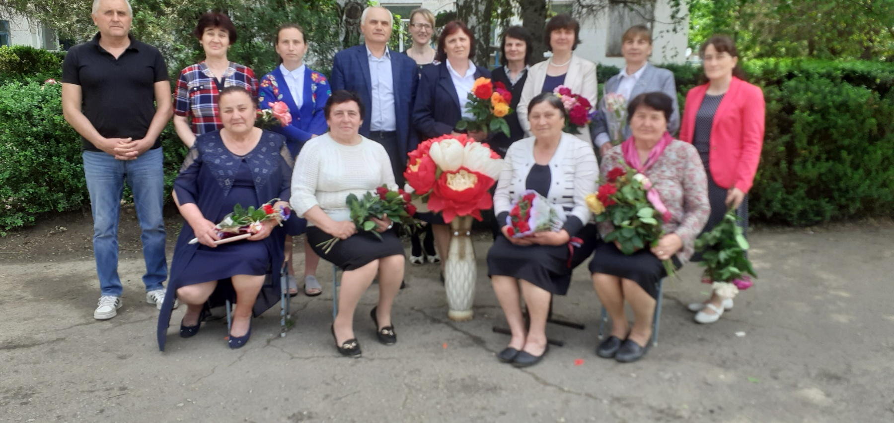
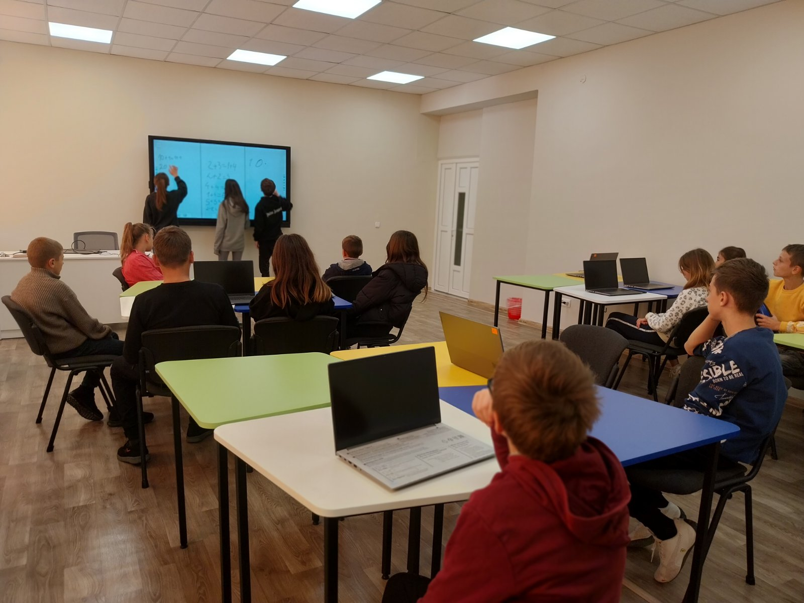
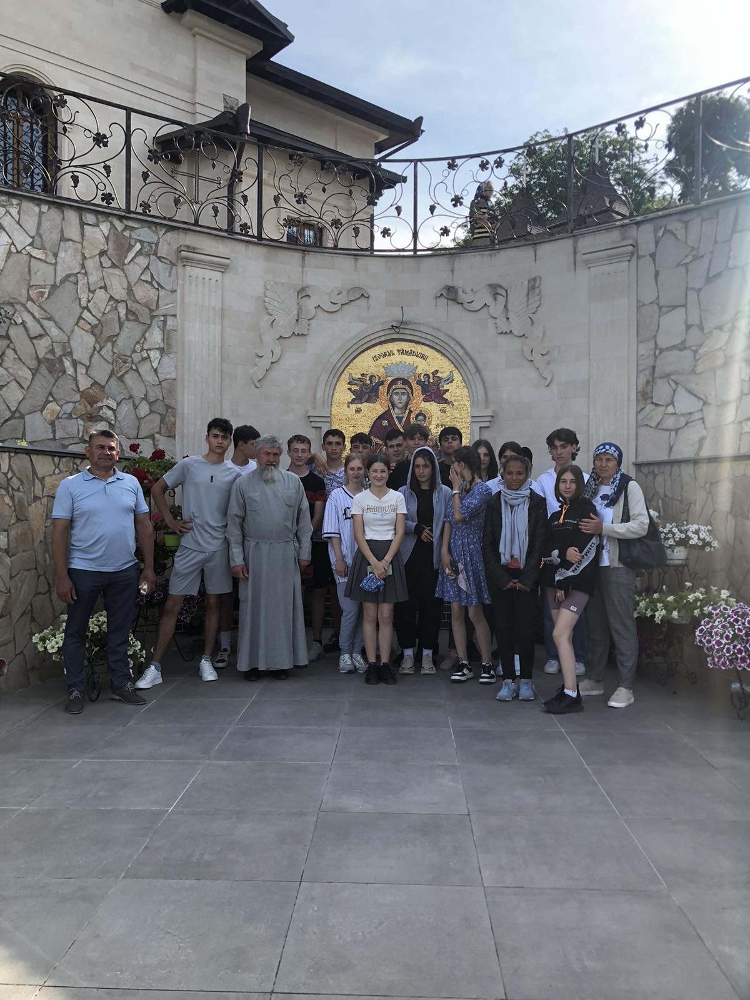

Ganenco Tatiana
|
Profesor
Româna, Rusa taneaganenco@gmail.com +373024246225 |
Sunt un profesor de matematică cu experiență, cu o pasiune pentru educație și dragoste pentru copii. Am un stagiu de peste 17 ani în predarea matematicii la nuvelul gimnaziu. Sunt un profesor motivat și dedicat, care își dorește să ajute elevii să învețe și să se dezvolte. În timpul carierei mele de profesor, am avut rezultate excelente în ceea ce privește performanțele elevilor mei. Sunt un profesor care crede în potențialul fiecărui elev. Sunt dedicat să ajut elevii să învețe matematică într-un mod clar și concis. Sunt convins că matematica este o disciplină importantă care poate ajuta elevii să devină gânditori critici și creativi. |
|  |

|
 |  |
Experiența de lucru
Profesor de matematică
August 2005 - PrezentProfesor de matematică în IP Gimnaziul "Ecaterina Malcoci".
Profesor de informatica
Septembrie 2020- PrezentPredau matematica și informatica
Profesor de fizică
septembrie 2023Stagiu de 17 ani